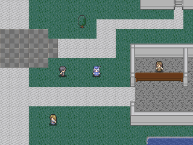
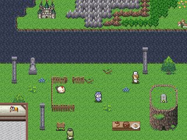
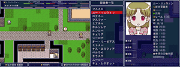
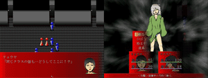
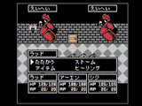
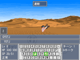
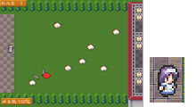

シルバーセカンド開発日誌
■
2009-03-05 (木) 公式ウディタコンテスト▼とうとうWOLF RPGエディターも公式サイト一周年！ということで、
気晴らしにウディタのプロモーションムービーを作ってみました。
この一年で色々機能が増えました。合成音声機能の例も載せてます。
以下の動画は、ウディタの説明などの際に、
好きに転載（というかYoutube貼り付け）してくださって構いません。
22:35 非公開になってて見られないのを修正しました！
ご迷惑をお掛けしました。自分は普通に見られるからついうっかり！
イラストにpochiさんとKasaneさんの画像を、
作品紹介に公式やらウディコンで上がっていたゲームを
掲載させていただきました。いやいや載せられるとマズいよ！って場合は
ご連絡していただければ対応いたします。
ついでにもう一つ一周年記念として、ウディタ公式でも
いっちょゲームコンテストを開いてみようかというお話になりました。
前々から色々ルール考えたり、（実現可能なレベルの）審査方法を
どうすれば実現できるかで激論をかわしたりとか、
色々密かに動いていたのですよコレが。
ウディタコンテスト公式サイト（新ｳｨﾝﾄﾞｳ）
すうさんが作ってくださった仮公式サイト。私が色々修正を加えています。
規約文などの一部は、3分ゲーコンテストを
参考にさせていただいております。
【審査方法】
まず気になる審査方法ですが、
審査員による審査と、一般審査の両方で行います。
得点方式は3分ゲーのものをとりあえず採用。審査員も一般審査も、
個人的に一番だと思うもの、二番目だと思うもの、その他良かったもの、
をそれぞれ選んでコメントを付け、
その票数に応じて点を付けて結果を決めます。
状況によって最適な手法があれば、随時それに変えていく予定です。
ホントはシステムとかグラフィックとか細かく項目に分けて評価したいなと
思うんですが、評価しきれない作品だった場合に困るのと、
それでゲームそのものの直感的な良し悪しに関わらず
評価が決まるとマズいので、仮にそれらで採点するにしても、
順位とは関係ない位置づけにする予定です。
【審査員】
審査員の人は、私の独断でぼちぼちスカウトしていく予定です。
というかすでに何名か決まっています。
「システム自作できるほどにウディタに詳しい人」で、
かつ「今もウディタをアクティブに使ってくださっている人」
をスカウトする予定ですが、
そのほとんどがコンテストそのものにもきっと参加しそうなので、
どうせだから「ウディタ熟練者」かつ「コンテストに参加しそうな人」の
この両条件を審査員の条件とさせていただきます。
どっちも私の主観になってしまうんですけれどね。
もちろん、そんなわけで審査員の方も作品を応募することができます！
しかし自分の作品にはコメントと点が付けられないので、
それが困る場合は、メールが届いても放置するなり断るなりしてください。
なお審査員は、一応全部の作品を遊ぶ義務がありますが、
最後まで遊ぶかどうかは保証しません。量によっては死人が出るからです。
そして、良いと思った作品にコメントと点を付けます。
【スケジュール】
開催シーズンは8月10日作品応募～9月10日に結果発表です。
おそらくシルフェイド学院物語が完成した後なので大丈夫だと思いますが、
ヤバそうだったら運営を他の審査員の人に
お任せすることもあるかもしれません。
ていうかぶっちゃけ、時間があれば私も作品投稿する気マンマンですよ！？
という感じです。コンテストに対する皆さんのご意見も募集中です。
こんな案があるよーとかこんなのやってみてほしいとか、
何かあれば記事左下の「拍手」ボタンからどうぞ。
一回押すとコメント入力画面が表示されますし、
コンテスト公式ページの一言メッセージからでも構いません。
以下は気になったコメント。 ▼追記を開く▼＞シルノ購入時のあまりＷＭを律儀にもまだとってあるんですが
＞これとっとく意味あります？ 使っちゃっていいですか？
使ってください。今は1円単位で買えるようになっているらしいので
大丈夫っぽいです。
あ、ちなみにWM売ってるとこわかんないとか、お小遣い出したくないとか、
そういう場合は無料でウェブマネーを手に入れる手段もあるので
（オンラインの懸賞に応募するなどで
ウェブマネーがもらえるサービスがある）
「ウェブマネー 無料」とかで検索してみてください。
ただしフリーのメールアドレスは忘れずに。
＞公開一周年記念効果かウディタでついにMP3が使用可能に！
＞うれしいんですけど、以前仰られていたMP3の
＞規約云々のほうは大丈夫なんでしょうか…
大丈夫じゃなくても35万円くらい……って高っ！
無料のソフトには請求かからないと思いますけどどうなんでしょうね。
安心のためにOGG形式をご利用になるのが安全ではあります！
＞（シルフェイド学院物語が）四月までに完成するんですかィ？
無理！でもがんばります！■
2009-02-13 (金) 言語とモノリスの速度▼
某保険屋さんの巨大アヒルちゃんを見たら今日はケーキをかぶってた、
何を言っているのか分からないと思いますがウルフです。マジです。
今日は色んなものの速度について検証してみました。
【C言語とRubyとウディタの計算速度】
前回もウディタの処理速度についてチラっと触れましたが、
実は裏で詳しく検証したデータを取っていたので、そのお話をします。
比べるのはC++とRubyとウディタの3種類の単純な変数処理についてです。
まず、C言語直打ちでX = X+Y;をコンパイルしたものを計算させた場合と
ウディタの変数操作1回分を比較すると、
さすがに1300倍くらいCの方が速いです。
また、Ruby（ツクールXP）のスクリプト内で「$X=$X+$Y」だけを行うと、
ウディタの変数操作の約13倍くらいの回数、計算することができます。
以下は100ミリ秒（0.1秒）あたりの単純な計算可能回数です。
（RGSSは時間計測関数が分からなかったので、
ハングアップエラーが出るまでの
10秒間に何回計測できるかを算出し、逆算しています）
【100ミリ秒あたりの計算回数】（CPU 2.5GHz環境下）
※どれもfor文または回数指定ループ内で実行したもの
C++ ： X=X+Y[※要コンパイル] 4500万回
Ruby(RGSS) ： スクリプト $X=$X+$Y 45万回
ウディタ ： 変数操作V[0]=V[0]+V[1] 3.5万回
ウディタの変数操作は、変数値を数値に変換する処理とか
元の値を拾ってくる処理とかオーバーフローを避ける処理だとか
バージョン違いを吸収するための処理だとかエラー時の処理だといった風に
おまけがいっぱい必要になるので、どうしてもその分だけ重くなります。
よく考えたら、配布状態のデータをプレイする際だけ
余計なエラーチェック処理を
行わないようにするといった工夫で、
処理速度が少し速くなるかもしれませんね。
余裕があったらこの辺りもチェックしてみたいところ。
にしてもこれ見ると、ウディタは元より論外として
Rubyの処理が思っていたより遅いなあという印象です。
ツクールVX・XPはこのRubyでイベントコマンド処理を作っているので、
例えば変数操作とイベントコマンド制御部分の
1回分を足して14行以上使ってしまうと、
イベントコマンド同士の比較では
ウディタより時間がかかることになります。
逆に、13行以内で作れればツクールの方が速いことになります。
XPは変数操作内だけで150行
（※といってもほとんどwhenの分岐なので詳細不明）ほど
記述されているので、数値が不要な場合は、4行だけで構成されている
「スイッチの操作」を使ってねということなんでしょう。
まあそれ以前に、複雑な自作システムは
全部Rubyで組めって話だと思いますけれど。
でもそのRubyと比べても、やっぱりC++の方が100倍速いので、
速度を追求してスマートに動くゲームを
作りたいならばC++でどうぞ、ってことになると思います。
C++なら、弾幕ゲームを作るとしても単純にウディタで作る場合の1000倍、
Rubyで作る場合の100倍の弾が出せるわけです！ まさに桁違い！
ただ私の中では、高速な「書き換え→テスト」作業が容易な
イベントコマンド型はやはり捨て切れません。
RubyやCみたいに、構文が間違ってたら動かないとか、
コンパイルを要するとか、
そういうことがないのが特にいいです。
あとはウディタの高速化が課題ですね。
ゆっくりできるようになったらもっと処理高速化の検討を行いたいです。
【女神モノリスの速度】
お次は全然実用的じゃないお話！モノリスフィアのお話です。
空想科学なんちゃら読本的な意味で女神モノリスの速度を
マジメに計算したレポートがあったので公開しておきます。
【単位 まずは1ピクセルの大きさを算出する】
モノリスの身長が165cmだと仮定した場合。
ゲーム内では彼女の身長は36ピクセルなので、
1ピクセルは約4.5cmと推定できる。
【本題：モノリスの最大速度を算出する】
モノリスグラビティがレベル10の場合、
モノリスは、真横、または真下方向に
最大速度で秒間960ピクセル移動できる。
その時の秒速は43m、つまり時速は約155 kmである。
だがゲーム内物理法則では、斜め45度で移動すると縦横ベクトル共に
秒間960ピクセルの速度が出るため、その場合の最大速度は時速約220km。
つまりモノリス様は生身で時速220kmで移動できます。
こんな速度で頭ぶつけてもノーダメージとかどう考えてもゴム人間。
以上、知らなくてもよかったモノリス様の最大速度でした。
以下は前々回の黒ウリユ記事に対するコメントです。 ▼追記を開く▼＞あれ…ウリユならデフォルトでこれくらいは
＞言ってきそうなイメージなのですが！
知らない間に人の記憶の中で黒くなってるウリユ。
＞・ウリユの見た目が少し成長したようにみえます
＞・ロリじゃない・・・だと？
＞・ていうかシル学ウリユはいくつくらいなんでしょか？
＞ 成長してるぽいので中高生くらい？
言っておきますが、ウリユはロリキャラじゃなくて妹キャラですよ！？
劇中では14歳（中3）から始まって17歳まで成長する予定なので、
使い回せるようにあんな感じにしています。
＞・黒ウリユも本編にでないでしょうか？
＞・これはいい毒舌・・・何らかの形で実装してもらえると嬉しいです
＞・黒いウリユもまた良しです！
こんなウリユいやだぁぁぁってご意見が一件だけありました。
つまりそれ以外は全部こんな感じ。皆さんＭのかたが多いんでしょうか。
＞うちの業界ではご褒美でござる＞黒ウリユ
どこの業界でござるか。
＞ところで今回のデフォ名はゴンベエとナナシじゃないんでしょーか？
ゴンベエとナナシの他にアランスミシやジェーンドゥなどをご用意！
ということは別に考えてませんが
ゴンベエとナナシでいいような気がします。
サラさんに名前付けてもらおうとしたら「ゴキブリ」とか「うすのろ」とか
付けられたりするのもイヤじゃないですか！？
＞シル学の登場キャラ募集してますけど、名前のある
＞キャラって大体登場確定してたりするんでしょうか？
どっちかというと何もないところから増やしている感じなので
最後までうっかり忘れられているキャラが続発する予感です。
＞リクレールさんをお風呂に入れてもあまり大騒ぎになってない・・・
＞つまりリクレールさんは男の娘だったんだよ！！
「な、なんだってー！」■
2009-02-08 (日) ウディタマップチップ強化計画▼シル学のシナリオ作り始めたら日誌に書き込むネタがないウルフです。
しかも気付かない内にアクセスが1400万ヒットですよ！
さすがにここまで来るともはや祝われないレベル。
「1万ヒット行ったよーやったー！」
と一人で言っていた時代が懐かしいです。
あの当時は、ネットなんてやってる人ほとんどいませんでした……
まだ綺麗だった自分……フフ……。
で、今回はほとんどの人たちが
興味なさそうなWOLF RPGエディターのお話！
この1年で、ウディタWikiにアップされた
二次配布・加工可能素材を集めたり、
綺麗なチップ描いてくださる人からベース頂いたりして、
片手間かつ秘密裏に新しい基本マップチップを作っていたのです。
特にWikiのものは、
質がいいのに数が少ないゆえにあまり使われなかったりして
このまま放置すると非常にもったいないので、ここでいっちょ
テコ入れの材料として使わせていただくことにしました。
Before これまでのマップ

▼
After 次バージョンからのチップ

Afterの上半分がフィールドマップ風、下半分が街の中です。
みんなの力をひとつに！チップ数にして約600点！
マップ素材をアップしてくださった皆さまにはとても感謝しています。
このチップはWOLF RPGエディターの
Ver1.10にて同梱予定です、ご期待下さい。
これでRPGを作るのに最低限必要な素材しか入っていない、
とは言わせません！
ただし敵キャラとか音楽とか音声は
全部拾ってきてねというやっぱり投げやり主義。
でも開発者の人は、（もちろん私自身も含めて）ちょっとくらい
素材集めで苦労してもいいんじゃないでしょうか！？と思う制作者側。
やってみてくださると分かるんですが、素材集めって面白いんですよ！
いかにマイナーで良質な素材を集めるか、という妙な技能が育ちます。
そして素材集めだけで満足して終わってしまったことも、
実は何度もあります！！
素材が自作できるようになると、
そういうことはなくなったんですけれどね。
それはそうと、このツールを作った経緯を書いてて分かったんですが、
WOLF RPGエディターの開発を始めたのは2006年の2月だったんです！
旧開発日誌の2006年1～3月あたりの記事。つまりウディタは
お腹にいるとき（※まだエディターでゲームが作れない時期）から
計算したらもう3歳！
いや待て受精卵から計算するのはおかしい、お腹の中にいたのが
7ヶ月くらいだった気がするので正確には2年と5ヶ月くらいです。
そう考えるとこの子は手間かかりすぎです。
そりゃ普通の人はあんまりこういうツール作らんわ！ と思いました。
これだけの労力を費やしているのなら、ウディタを作る手間で
もう一本くらい別に新作を作れたかもしれません。
でもそう思う反面、これがないと
モノリスフィアが生まれなかったであろうことを考えると、
ちょっと寄り道してきた甲斐もあったというものです。
ただ、もともとアクション用を想定した造りではないので、それ用の
高速な処理機能が搭載されていないのが今のところの難点。
でも、そんなこと言ってるうちに
第二回ウディコンでさっそく弾幕シューティングを
作っておられる方がいて目玉が飛びそうになりましたよ。
当たり判定回数が多い弾幕シューティングは
負荷を下げる工夫が大変なのに
このゲームは処理が軽い！ かなりのやり手です。
モノリスフィアはC++のプログラム部分に
計算が多い処理を入れたりしているので
まだ何とかなってますけど、
イベントコマンドだけでアクション系作るとか
私からするとかなり想定外の使われ方です。もちろん無茶は大歓迎！
こういう作品を見ていると、ウディタのゲームは何が出てくるか
分からないので面白いなあ！ と思います。
ツール作者自身も楽しめるなら、
公開しててこれほどよろこばしいことはありません。
使ってくださっている方々には、感謝の気持ちでいっぱいです。
いつも本当にありがとうございます。
（前回の黒ウリユについてのご意見コメントはまた次回） ■
2009-01-22 (木) ウディタVer1.09アップ！▼ということでWOLF RPGエディターのVer1.09をアップしました！
【WOLF RPGエディター公式サイト】 【詳細な更新内容】
今回の見所は、音声をファイル名で
直接指定できるようになったことでしょうか。
これまでは音楽や効果音をいちいちシステムデータベースに
登録しなければ使えなかったのですが、これからはその手間なく、
ツクールのように簡単に指定できるようになります！
あと、「文字列から指定の単語を削除する機能」も追加したので、
これで文字列をスイッチ代わりに使うことも可能になりました。
（文字列の条件分岐で「～～を含む？」という
機能を使ってオンオフを判別）
【非公式ウディタコンテスト】
ついでに、あと10日で非公式ウディタコンテスト(ｱｰｶｲﾌﾞ) 第二回の
応募期間も始まりますのでご報告！
「何かコンテストもやってみたいねー」という話を時々知り合いと
相談したりもするのですが、やっぱりなかなかそこまで気を回せないので、
こういったコンテストを開いてくださっている有志の皆さまには
本当に感謝しています！
で、ご連絡用ネタ絵。またいつものウディタ公式トップ絵改変です。
ウディタ公式のトップ絵まるまる書き換えるのも面倒なので流用しまくり！
お絵かき掲示板で勝手にウルファール祭りして「おっ」と思う絵があったら
ウディタ公式のトップに使わせていただきたい気分です。
あ、その際は横長サイズだとトップ絵にしやすくて嬉しいです！
横350x縦250とか横400x縦250などです！
でも自分のサイトのトップ絵募集なんてしてたら、
それくらい自分で描けって怒られそう。
くそう自分が二人いれば……！！
で、ウディタ記事なんでついでにもう一つ！
ウディタ作品2つのレビューを行いました。ここでは軽い説明だけ。
たぶんRTSな冒険者組合(配布終了) 作者：Kasane さん

リアルタイム経営シミュレーション。主な流れとしては、
冒険者を雇ってパーティーを組んで
ダンジョンへ放り込んで素材を取ってこさせる！
素材は武器防具の材料にしたり、売ってお金にすることができます。
で、パーティを強化しながら、未知のダンジョンを次々攻略していきます。
一ヶ月ごとに冒険者にお給料を払わなければならない
恐怖の決算タイムがあり、
それが元で破産すること多数！（というかゲームオーバーの主原因）
しかもお金はいつも結構ギリギリになりがち！
というちょっとシビアなゲームです。
序盤攻略用のネタバレメモがゲーム内にあるので、
一回でもゲームオーバーになったら投げちゃう系のおかたは、
最初にそれを読むことをオススメします。
また上記のように、（たぶん）パーツ合成によるランダムキャラクターも
かなりしっかり作られていて好印象！
私もシルフェイド学院物語でも似たことをやろうとしているのですが、
これ作るのかなり大変なんですよ。でもおかげで、
同じキャラばかりとか、顔無しキャラばかりということがないので、
そういった意味で飽きが来ないのは大事だと思います。
冒険者が顔グラフィック無しだったら途中で投げてます、
それほど重要な要素でした。
このように、必要なところに必要なリソースが確実に振り分けられていて、
作った人はかなりやり手の臭いがします。
またシステム周りもよく練られていて、
やってて安心できるのもいいところ。
個人的には文句なしのデキです！
にしてもこのゲーム、アップローダにちょこんと上がっただけで、
登録ページにもなかったので、もう少しで見落とす寸前でした。危ない！
自信作は遠慮なく登録ページにアップしてくださいよ！？
私も、さすがに全部を全部遊ぶ時間もないので、
登録ページのコメントを参考にして
遊ぶゲームを選ぶことだってあるんですよ。
何はともあれ、珍しく熱中してプレイしたゲームなので、
個人的にオススメです。
なお、ゲーム内の説明書や図書館の本を良く読むことが攻略のカギ！
Pygmalion[新ウィンドウ] 作者：異端者 さん

で、こちらはダークでバイオレンスなストーリー＆謎解きRPGです。
こういうのは個人的に合わないだろうなあ、と思いつつ遊び始めてみると、
そのまま最後まで遊んでしまったストーリー系RPG。
ストーリー系で最後まで遊んでしまったゲームは、基本的に今まで全部
レビューしてるので、今回もそれに漏れず紹介させていただきます。
なおこのゲームはザコ戦がなく、
ストーリーと謎解きだけに終始徹底しているので、
物語が合えば勢いでどんどん先に進めていける造りになっています。
記号で表されたキャラクターも、やってみるとほとんど気になりません。
私も背景が全然描けなかった頃、シルフェイド見聞録のシークエンス1を
背景1枚で済ませた経験があるので、
こういう部分をうまくプレイヤーの想像力に任せて
ラクしている（というと失礼ですが）のを見ると、
やるなあ、と思ってしまいます。
ゲーム開発を始めた頃は、何でもかんでもリソース突っ込めないし
素材だってうまく作れないので、
プレイヤーの想像に任せても大丈夫そうなところを
記号にして通すのは、挫折しないための非常に重要なテクニックです。
ただ想像に任せるにしても、
顔グラフィックだけは想像に任せしきれない気がします。
最近のウィザードリィっぽいダンジョン探索ゲームのシリーズなども、
顔グラフィックだけは何だかんだ言ってちゃんと付いてますしね。
ということで、絵を自作するつもりの方は、
顔グラフィックだけでも描ければかなり強力な武器になると思いますよ！
というところで、今回のウディタ関連ニュースは以上です。 ■
2008-12-29 (月) 窓の杜大賞 銀賞受賞▼多くの10周年記念コメントをお寄せくださって、
皆さま誠にありがとうございます。
いただいた言葉を糧に、これからも頑張り続けたいと思います！
それはそうと。
WOLF RPGエディターが「2008年度 窓の杜大賞」で銀賞を頂きました！
運が良くても編集部賞もらえる可能性が
最もベストだろうと思ってましたから目玉がぶっ飛びました。
ラッキー使いすぎたので反動で来年の運勢が不安です！！
これも多くのバグ報告やアドバイスを
送ってくださった皆さまのおかげです！
本当にありがとうございます！
【2008年度 窓の杜大賞】
http://www.forest.impress.co.jp/prize/2008/result.html [ｱｰｶｲﾌﾞ]
銀賞 「WOLF RPGエディター」
評価は…え？「楽しく簡単に作れる」……？
「とっつきやす…い」……！？ これ送ったの誰！？
こりゃツクールと比べた場合の評価ではないでしょうね。
HSPなどのスクリプト系ツールで
挫折した人が感想を送って下さった、という印象です。
そんな「市販ソフトに手を出せなかった人」が
触ってくださっているらしいので、
そういう意味では公開して良かったなと思います。
投票してくださった方々が
ここを見てくださっているかどうか分かりませんが、
みなさま本当にありがとうございました！
もっと綺麗な素材が欲しいとか、もっとお手軽に作りたいという方は、
ツクールシリーズをお買い求めになるのがオススメです。
私はツール開発が専業じゃないので、
初心者向けのドキュメント整理だとか
分かりやすいチュートリアルなんて書くヒマがないんですよ。
ツクールは本当に初心者向けなので、
「ＲＰＧ作るの面白そう、でもウディタむずいよ！」
とお思いでしたら、是非ツクールをどうぞ！
技術が向上したならば、最終的に作れるモノ的には
そんなに変わらないと思います。
むしろRPGツクールのほうがスクリプトでやれる幅が広いので、
ツクールの方がポテンシャル的には強い気がしますよ！
以下はその他の受賞ソフトについて。 ▼追記を開く▼ちなみに、窓の杜大賞に挙がっている他のツールも
かなり便利なのでオススメです！
といっても、どれもこれも用途がマニアックすぎますよ！？
PC初心者さんはHDDの状態を知りたいなんて思わないでしょうし、
「デフラグ？何それ」だし、
パーティション切り分けもたぶんしませんし、
テキストエディタもメールしか書かない人には必要ないし
大量の動画ファイルを保存するなんて
普通の人はしないはずなんですよ！
もちろんゲームを作ろうなんて思う人もいません！
そう思うと濃すぎる大会。
いいなと思ったのは、大賞の「CrystalDiskInfo」でして、
もうシェアウェアレベルのHDD状態チェックソフトが
必要なくなるほどのシロモノ！
前にハードディスクが壊れたので
HDDLife（シェアウェア）を導入してみたものの、
もう試用期限が切れちゃったので、これは凄くありがたい一品でした。
また、「mEditor」はワードパットやメモ帳の
完全上位互換として使えますから速攻で導入しましたし、
「フォルダの足あと」もウディタやらペイントやら
複数ソフトで「データ保存時のフォルダが遠いよぉぉぉ！！」
と思っていた身からすると鼻血が出るほど便利でした。
かつては有料でしか存在しえなかったソフトが無料のものとして
配信されるようになる傾向は、
どんどん強くなっているのかもしれません。
プログラムは、昔に比べるとますます敷居が下がってきています。
コンパイラ（プログラムコードを実行できる形式に変換するソフト）も
無料だしそれに負けじとVisualStudioすら
無料版を配布するような時代です！
そしてライブラリ（プログラムに使えるパーツみたいなもの）も、
理解しやすく、使いやすい造りへと日々進歩しています。
発想とやる気と学習する意欲さえあれば、お金なんて無くとも
PCの世界では何でもできてしまう時代が来ようとしています。
ソフトウェア企業は、一般人に
とてもマネできないような商品を作らなければ、
見向きもされない時代が来てしまうのかもしれません。
まあ、実際PCショップのソフトコーナー行くと、
フリーウェアに詳しい人からしたら
絶対買わない商品が溢れているんですけれど！
データをMP3に変換するソフトなんていちいち買わないよ！
そして天才プログラム少年少女が生まれる土壌も育っているわけで、
これから楽しい世の中が始まろうとしている気がします。
日本人は何かにハマると死ぬほど頑張る人種だと思うので、
これからの未来も凄く楽しみです！
それでは、みなさんよいお年を！仮免許のためにヒイヒイ言ってたシーズンがようやく終わりを迎えました。
ということで、おかげさまで本日、
仮免許試験に合格することができました。
ウィンカー1回忘れた程度でも普通に実技通るんですね。
いくら緊張したとはいえ路上では忘れないように
気を付けないとヤバいですよコレは。
っていうか、MT（マニュアル）車の実技合格率が50％だったのに対し、
AT（オートマ）車の実技合格率が80％だったのを見ると、
MT車に乗らなくて良かったと思いました。私はAT車限定です。
移動手段として考えるなら、操作がより少ない方が嬉しいと思います。
え、開発はどうなってるのかって！？
いや試験の方が忙しくて全然進んでませんした！
でも自動車学校はとりあえず一区切り付いたので、
そろそろ開発の方にも余裕を回せるようになると思います。
【余談】 ウディタの新機能
次回バージョンのWOLF RPGエディターにて、
「commonファイルを読み込んでそのまま実行できる」
機能を追加する予定です。
コモンイベントファイルだけ入れておけば使えるので、
これまでよりもっと気軽にコモンイベント素材が
使えるようになると思います。
ついでに、合作するとき無闇に
ベース部分に手を加えたくない場合にも便利。
あと、
「コモンイベント名でコモンイベントを呼び出す機能」
も追加予定です。何を言ってるのか分からないかもしれませんが、
これまで番号指定で呼び出していたコモンイベントを、
プログラムのように名前で呼び出すことも可能になる、ってことです。
たとえばコモンイベント1番に
「アイテム増加」という名のコモンイベントがあったとき、
これまでは「1番のコモンイベントを呼び出す」という処理しか
できなかったのに対し、
「名前『アイテム増加』のコモンイベントを呼び出す」
という処理にすることで、名前を変えない限りは
このコモンイベント『アイテム増加』の場所を1番から15番に
入れ替えたりしてもそのまま正常にゲームが動作するのです！
まあ、要は場所を選ばなくなるってだけなので
ゲーム的には何も意味ないんですが、
作る側からすると何も考えずにポコポコと
コモンイベントを増やせるので、だいぶ気楽になると思います！
正直、どこにどのくらいコモンイベント入れるか、
と迷って時間使うのも多いですからね。
問題は、コモンイベントの名前を変えると動作しなくなることですが！
処理速度的には、名前呼び出しでも「番号呼び出し＋変数操作0.5回分」
くらいの時間しかかからなさそうなので、変数操作一個増やしただけで
致命的になるような状況でもなければ、
基本的に名前指定の方を使った方が
管理が楽になるんじゃないかなと思います。
10000万回あたりの処理時間、番号呼出 54ms vs 名前呼出 69ms
（※比較：変数操作10000回 = 約30ms）
ただ、まだまだ粗が多すぎる状態なので、
正式リリースは来年だと思います！
本音は、シルフェイド学院物語に外部コモン読み込み機能が必要だったので
名前による読み込み機能もついでに搭載した感じなんですが、
思ったよりも使い勝手がいいかもしれません。
そのうちデータベースも名前で呼び出せるようにしたいと思っています。
「タイプ名」とか「項目名」で
データベース内容を呼び出せるようになったら、
コモンイベントでシステムを追加するときにも
場所を選ばずに使えますし、何より、
後からのメンテナンスや機能拡張が格段に楽になりそうですから！
以下は気になったコメントです。 ▼追記を開く▼＞某保険屋の特大アヒルちゃん、ちょっと前にハロウィンの
＞帽子を被ってて犯罪に手を染めそうになりました
ブフォっ、さすが某保険屋さんのアヒルちゃん、
何着けても似合いそうです。
ああいうのって、そこの担当員の人が
カスタマイズしているんでしょうか、気になります。
こっちで見た麦藁帽子と虫取り網Verなんて、
同じスーパー内で売ってそうな物だったので
（※保険屋さんはスーパー内のテナントにある）、
「うわあー、これは手軽でいいなあ」などとも思ったものですけれど。
＞シル学にて攻略できるキャラの意見募集は
＞もう行っていないのでしょうか？
いつでも、いつまででも行っております！
作るかどうかは別ですが、顔グラフィックが用意されるかどうかの
一線を越えられるかもしれない一票になるかもしれませんので
ご意見はいつでも募集中です。
■
2008-12-09 (火) WOLF RPGエディターVer1.08▼ちょっとセンチメンタルな気分になったので
サボテンを買ったウルフです。
セレウスサボテンという名前で、
どこのショップでも「電磁波を吸収する」（！？）とか、
パソコン使ってても疲れにくくなるという売り文句があったのですが、
私は単に値段が安いサボテンが欲しかっただけで
上記の面では特に期待していませんでした。
というか電磁波吸収ならすぐ実験できるはずなのに
どこにも実験データがないんですがが。
おかしい！と思って調べてみたら、
「もともと海外の人が電磁波対策おまじないグッズとして
売ってたサボテンである」
という情報が先に見つかってしまいました。
商売人はこういう情報も売り文句にするのか！
やるなあ、と思ってしまった一日。
今や情報源が不確かな情報は
全て信じられない大人になってしまいましたが、
その反面、真実の探求というのもまた面白いものです。
でサボテン話が長くなってしまいましたが、本日ようやく
WOLF RPGエディターのバージョン1.08をリリースしました。
目玉の新機能は、
・ピクチャをマップのスクロール座標と
連動させられるようになった
「スクロールにリンク」というオプションをオンにして
ピクチャを表示すると、
それ以後そのピクチャがマップに
張り付いてるような動きをするようになります！
他にも細かい修正が色々あるので、
よろしければ以下もあわせてご覧下さい。
【WOLF RPGエディター更新履歴】
連日のウディタバグ修正で疲れたので
今回はこのくらいで許してください！
そしてプレイヤーの方向けの記事があまり書けなくてすみません。
今、シルフェイド学院物語はアイテム装備欄とかスキル着脱欄とか
やたら難しい割に見栄えとは完全に無縁なシステム部分作ってるので、
何もないんですよコレが！とにかく頑張ります！
以下は気になったコメント。
＞Loose Leaf[ｱｰｶｲﾌﾞ]様のサイトのVX用素材が他ツールで使っても
＞大丈夫みたいなんですが、なんとかウディタで使用って・・・
＞可能性としては、できるんでしょうか・・・？
当然できますよ！？
tkool2WOLFなどで変換を要するかもしれませんが、
規約的な意味ではまったく大丈夫です。
＞CardWirthでもキーコードという
＞タグ的なものが使われていましたよ！
という情報が多数寄せられました。
なるほど、多人数シナリオ作成型のゲームを
参考にしてみるってのは手でしたね！
こっちはPCゲームによくあるMODの概念ばっかり頭にあったものでして。 ■
2008-11-22 (土) ウディタ作品紹介 DL数考察▼
今回はそれによるダウンロード数について
ちょっと気になる点があったので、色々と考えてみました。
【前回の紹介作品 DL数考察】
※これは作品の良し悪しを語るのではなくて、スクリーンショットと
紹介文だけを見てダウンロードに
こぎつけるまでに至った理由の考察です。
ゲームの中身とはあんまり関係ありません。
今回は全てウチのサーバに二次掲載させていただいたのですが、
22日の朝6時までのダウンロード数が、
DragonTears 449
たいぷろ～ぷれ 986
おむらいすを作る 734
でした。これは
「紹介文とスクリーンショットだけを見てクリックに至った数」なので、
「紹介の仕方でこんなに差が出たのだろうか？なら逆に、
その理由を究明すれば効果的なアピール方法が分かるんじゃ？」
と思い立ち、今回色々考えてみたわけです。
数値に差が出た原因として挙げられる可能性は、
パッと思いついた限り以下の3つで、
1.スクリーンショットの見栄えの差
あくまで主観ですが、パッと見で綺麗な順に、
たいぷろ～ぷれ＞おむらいすを作る＞DragonTears
ではないかと思います。「おっ、これで説明が付くじゃん！」
なんて思ってはいけません、次でくつがえされます。
なお見栄えの差の良し悪しは、
もちろん撮影した私にも責任があるのですが、逆に
「撮影者の人が撮りやすい、
タイトル画面や序盤の画面でキレイ所を持ってくる」
とか、そういうテクニックもアリじゃないかなと思っています。
「ネタバレを避けるため」、「面倒臭いから」、
などの理由で、レビュアーが序盤の部分を
撮影するだけで終わらせることも少なくありませんからね！
2.すでにプレイ済みだったので落とさなかった
色々調べてみると、これが一番要因として大きいようです。
実はDragonTearsはウディタ公式の登録ページに10月から登録されていて、
今回とは別に、ダウンロード数が
すでに約800に到達しています（よって計1200）。
さすがに事前DLなしでも、
この800が丸々加算されたりはしないでしょうけれど、
今回のDragonTearsのダウンロード数が少なかった理由にはなりえます。
でもそんなこと言うと「おむらいすを作る」も、
最近「作ってますスレ」に上がった作品なので、
プレイ済みの人が多いかもしれません。
（ただ、アクセス統計のランキング外だったので数値不詳、
「おむらいすを作る」旧版・最新版のDL数がそれぞれ200以下、
ということだけ分かっています、計200～300くらい？）
ついでにたいぷろ～ぷれにも言及すると、
前回のウディコン紹介のときにウディコンサイトで
プレイ済みの人の数がいたはずでして（数不詳）、
これも含めると見えない数字が出まくりで、
この時点で統計として破綻しています、ダメだこりゃ。
3.紹介文の差
たいていは、上にあるものほど高順位と認識されるのではないでしょうか。
その場合、DragonTears＞たいぷろ～ぷれ＞おむらいすを作る、となり、
（既知の）事前ダウンロード数を含めた場合は
この順位で説明が付きそうですが
未知の値の分も含めると、どれもほぼ同じ数になりそうです。
で、個人的な予想から言うと、
「事前DLが全くなかった場合、
どれもほぼ同じ数だけダウンロードされた」
のではないかと思います。最初は日誌のDL数だけ見ていたので、
「え、DragonTearsが一番少ない！？
ひょっとしてシナリオ型RPGって需要ない…？」
とドキッとしたので考察してみたのですが、
事前DLなしの条件で紹介すると、
おおよそ以下の値になるのではないでしょうか。
DragonTears
449に事前DLされた800が7～8割くらい加算されたとして1000～1100
たいぷろ～ぷれ
986にウディコンDL数が加算されたとして1000～1100？
おむらいすを作る
734に200～300くらい加算されて900～1000くらい
つまり全部±10％程度の差でおさまりそうな予感がするわけです、
あくまで経験による個人的な予想なので、
全くアテにはなりませんけれど。
「ミニゲームだったらいいや」
と思って落とさなかった人もいるかもしれないし、
「長編RPGは大変そうだなあ、いいや」
と思って落とさなかった人もいるでしょうし、
個人的にはその辺りの需要もちょっと知りたいなーと思ったのですが、
今回のデータだけでは判断は付かないと思います。
むしろどんなゲームにもバランスよくプレイヤーが
散っていったと考えるべきで、
ジャンル違いで極端に選り好みされているわけではないというのは
フリーゲーム開発者としては喜ぶべき状況ではないでしょうか！
で今さらですが主題に戻ります。結局、今回考察したかった
「アピールするにあたって効果的な方法」ってのは、
今回のデータ見る限りでは特に
有意な差がないんじゃないか！？ ってことです！
理由は、「3作品くらいだったら全部遊んじゃう」かもしれないし、
「オススメ作品ならきっと面白いハズ！とりあえず落とすぜー」
と思ったのかもしれません。
とりあえずウチに紹介された程度だと
あんまり多くの人に遊んでもらえないので、
ゲームをみんなに遊んで欲しい方は
どこかしらのゲーム掲載サイトにアップされることを強く推奨します！
たとえばVectorさんちの新着レビューで紹介されたら、
遊んでくれる人は1000人どころじゃ済みませんよ！？
同じ時期の新着作品の中でトップクラスのクオリティならば、
ほぼ100％の確率で新着レビューに載ると思うので、
キンキンに厳しく意見もらってチューンして画像も程々のレベルまで
到達させることができれば、それでDL数5桁の一躍大人気ゲームに！
……って、みんな同じこと考えてるから大変なんですけどね。
誰かに取り上げてもらうほどの作品を作るためには、
みんなが限界だと思ってるところから先へ、
さらに一歩踏み込む意志が必要です。
そこで心の強さの差が出るのだと、自分は信じています。
自分はまだまだ踏み込みが足りません、ゲーム作りは奥が深い。
でもグラフィックが凄くてそこそこゲームとして成立してたら、
中身が普通でもレビューされそうな予感がするのも
ゲームの世界、難しいなあ。■
2008-11-17 (月) ウディタ作品紹介3▼ちょっとリアルが色々大変になってきたウルフです。
ということでネタもないので、
今回はWOLF RPGエディター作品の紹介です！
前からたった二ヶ月しか経ってないのに、
気付けば山ほど作品が増えてて驚きます。
こんな稚拙なツールでも使ってくださっている方々には
感謝が尽きません、
みなさま本当にありがとうございます。
それにしても、基本システムを使わず
ゼロから作ってる作品もかなり多いので、
見ていて飽きませんね。
それでいて全体的な質もどんどん上がってたりして、
私もおちおちしていられません。
今回も個性的な3作品の紹介です。
DragonTears 作者：Pの人さん[ｱｰｶｲﾌﾞ]

竜人の男が繰り広げるストーリー重視の中編RPG。
フル自作システム、フル自作画像のこだわりっぷり！
非常に細部までレトロ調を貫いた造りとなっていて、普通の作品に
飽きた方には新鮮な一品だと思います。プレイ時間は約2時間程度。
ストーリーに関しても現レビュー作品の中では
トップクラスのデキかもしれません。
私自身がファミコン世代ゆえかもしれませんが、
この作品の短いひらがなの文には、
強い魂が宿ってるような印象を受けます。
読みやすく短い文には想像力をかきたてる力があるのかもしれません。
様々な意味でレトロ調がハマってる作品と言えるでしょう。
また、マップや次の目的地も迷うことがなく割と明解で、
シナリオ重視RPGとして非常に適切な造りに
なっている印象を受けました。
レベルアップの必要も特にないので、さくさく進めるのもいいところ！
一見当たり前のように思われるかもしれませんが、
「ちょっとプレイヤーの人に苦労してもらおう」
という気持ちをグッとこらえて、
目的に合ったゲーム構成にするというのは、
簡単なようで意外と難しいことです。
この点は、自分のゲームの主軸がどこにあるかを
しっかり意識できているからこそできることだと思います！
たいぷろ～ぷれ

なんとウディタ初のタイピングRPG！初のタイピング作品なのに、
いきなり完成度が非常に高い一品です。
移動時やコマンド選択操作はタイピング的な操作になっているので
少し慣れが必要ですが、最も重要な「タイピングによる戦闘」に関しては、
打鍵の気持ちよさに始まり、細かい演出にも
凝っているところが非常に素晴らしい！
他の細々とした部分も、タイピング練習用のゲームとしてのスジを
的確に突いていて非常に好感が持てます。
なお、このゲームはただ単純にRPGと
タイピングを組み合わせただけに終わらず
「タイピングが苦手な人でも経験値と金を溜めて
装備と道具を整えれば突破可能」
という点が、幅広い人に楽しく遊んでもらうための
難易度調整機能として特筆すべき点だと思います。
タイピングが得意な人は初期装備で
初期Lvのままでも最後まで行けますし、
途中で進めない人はその近辺で
レベルアップと称した「タイプ練習」を
積み重ねることになりますから、タイピング練習ゲームとして
非常に完成されたゲーム構成になっているのです。
難しくて実質的には次のステージに進めなくても、
「まだ装備やアイテムが買える」
というやり残しが現ステージにあるだけで
プレイ続行に十分なモチベーションになりえますから、
これは非常にナイスな融合と言わざるを得ません。
また、細かいところですが、キー設定で、例えば「し」を打つ時は
「SHI」で打つか「SI」で打つか、
といった具合に、打つキーを自分で設定できたり、
キーボード配列が下部に表示されていたりと、親切要素も満載！
ただでさえ独自システムで大変なのに、これらの配慮も
忘れていない細やかさが凄い！タイピングを愛している人にしか
できない作り込みっぷりだと思います。
おむらいすを作る 作者：えーきさん

おむらいすを食べたいメイドさんが、
画面右側から攻めてくる敵を包丁投げで撃破していくという趣向の
ちょっとブラックなマウスシューティングゲームです。
え、冗談抜きで本当にそんな物語ですよ！？
1プレイが約15分ほどで終わるので、
軽く遊びたい方にオススメだと思います。
操作方法は、方向キーでキャラ移動、マウスカーソルで狙いを定めて、
左クリックで包丁発射です、左クリック押しっぱなしで
自動連射というのがとても親切で助かります！
ただでさえ、お勉強やデスクワークで腱鞘炎気味な皆さんにとって、
ボタン操作は少ないに越したことはないと思いますからね！
また、1面クリアごとに攻撃力や発射数を
1ポイント強化できるという成長要素があり、単調になりがちな
ゲーム性にメリハリを加えている点が好印象です。
ゲーム序盤が少しシビアな難易度なのですが、その反動で、
小さな成長のありがたみを非常に強く感じられるようになっているのが
面白い調整だと感じます。1点1点は小さな差ですが、
ゲーム進行につれて、その積み重ねてきた成長っぷりを
いかんなく楽しむことができるでしょう。
あ、私はメイドさんLが好きです。
■
2008-10-31 (金) ウディタVer1.07アップ！▼ペンタブレットが壊れたウルフです。
7年くらい使ってるんでそろそろ壊れるとは思ってました。困った。
今回はウディタのバージョンアップをいたしましたのでご報告！
演出周りの機能が大幅強化されました！
WOLF RPGエディター公式サイト
ということで、1.07へのバージョンアップで
できるようになった演出をご覧あれ！
以下は、マップのズームとピクチャのズーム機能の使用例です。
単純な演出ですが、迫力を増したりするのには便利だと思います。
他にもマップを直接書き換えたりする機能が追加されましたので、
組み方次第でいわゆる「不思議のダンジョン」を作ったり、
壁を調べると隠し部屋が突然出てくる演出、
雪道歩くと足跡が付く演出など、
様々な応用が可能となっております。
Copyright © SmokingWOLF / Silver Second
 カテゴリ: ウディタ
カテゴリ: ウディタ カテゴリ: ウディタ
カテゴリ: ウディタ